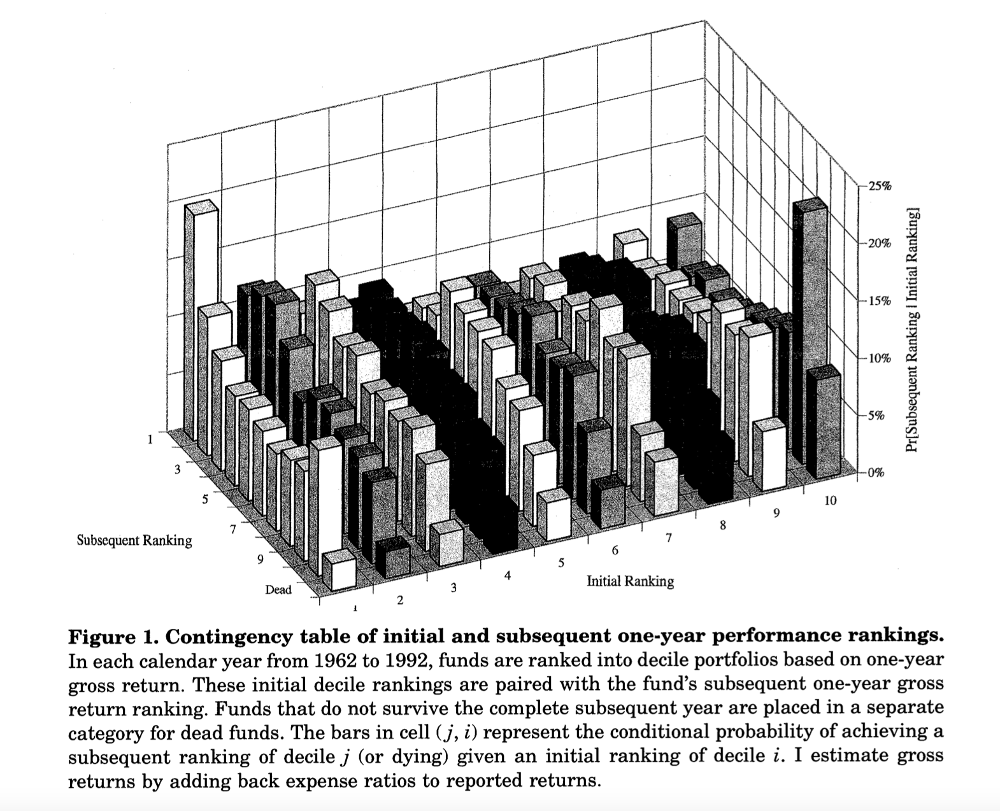

Mark Carhart’s classic 1997 Journal of Finance paper is highly cited for the momentum factor used in asset pricing models. Carhart (1997) augmented Fama-French 3-factor model (Fama and French 1993) with a factor that accounts for the momentum anomaly identified by Jegadeesh and Titman (1993).
Download Carhart’s article here.
I read this article for the first time in spring 2007 while taking a class on Capital Markets Research at SUNY-Binghamton taught by Srini Krishnamurthy. Although this article is heavily cited for introducing the momentum factor, the topic of the article is way more interesting. In a nutshell, the article shows that mutual fund managers may not be as skilled as commonly believed, and their performance can be explained away mostly by momentum trading strategies. Furthermore, there is no persistence in mutual fund performance. This means that if you decide to invest in a fund based on the last year’s returns, the chances are slim that the performance of the fund will persist in future!
Although over the years I may have forgotten some of the details, Figure 1 from this paper is etched in my memory. From a purely data visualization perspective, it is a terrible plot. A 3-dimensional plot on 2-dimensional paper is no go. This is a static plot which means it lacks interactivity. Finally, this plot was printed in black and white! Yet, this is an amazing plot. I reproduce it here and explain why this is so insightful.
This plot is based on one-year gross returns of mutual fund. Carhart first ranked these funds in a descending order of the annual returns and then created 10 deciles. Accodingly, Decile 1 contains top 10% funds by returns and Decile 10 has the poorest performing 10% funds. Next he tracks these funds in the succeeding year, where he again sorts them in one-year returns deciles. The plot above shows the transition probability of a fund ranked in decile \(i\) in year \(t\) moving to decile \(j\) in year \(t+1\). Formally, he is plotting the following conditional probability: \(P(j|i)\). As some of these funds may not survive the next year, \(j \in [Decile 1,..., Decile 10, Dead]\).
If mutual funds managers are skilled and their performance is consistent, one would expect that \(P(j|i) ~ 1\) when \(j = i\). However, the plot above implies something like \(P(j|i) ~ U(0, 1)\) meaning a mutual fund may transition freely from one decile in a year to any decile the next year! That’s quite insightful.
Improving Figure 1
My objective of writing this post is to recreate this data visualization so that the insights are more apparent. In order to do that, I am creating four plots as follows:
The first plot is a 2-dimensional heatmap. This is a better representation because it will map the transition probabilities to colors rather than the height of the bars.
The second plot uses
echarts, a D3 library in JavaScript. I am using an R wrapper calledecharts4r. This plot will make this an interactive 3-dimensional visualization.I recreate the 3-dimensinoal bar plot using another D3 library called
highcharts. I am using an R wrapper calledhighcharter. With this, I could add different colors to the bars but at the same time, I lost the ability to rotate the plot. I correct it in the last plot.In this plot, I use a Shiny app that adds rotation to the plot made using
highcharter.
I used a mutual funds data set spanning 1961 to 2019. In my plots, the deciles are reversed. I created the deciles by sorting returns in ascending order. So Decile 1 consists of poorly performing mutual funds while Decile 10 consists of top performing mutual funds. Additionally, in my data I did not have a quick way to determine dead mutual funds so I don’t have that category. I just used the reported raw returns without adjusting them for the management expenses.
Heatmap
The first plot we will create is a heatmap.
In this heatmap, things look a bit more interesting. We can see that the primary and secondary diagonal elements are darker than the off diagonal elements. Following the standard notations in linear algbra, the primary diagonal runs from top left to bottom right. The dark rectangles towards the ends of the diagonal suggest that there is a higher transition probability from low deciles to high deciles and vice versa. The secondary diagonal runs from bottom left to top right. This diagonal captures persistence in performance. The elements on this diagonal are darker suggesting some evidence of persistence. However, the highest probability is 22% for Decile 1. For Decile 9 and 10, these are 13% and 19% respectively. Thus, the evidence for persistence is weak at best. ALso note that although I extended the time period under investigation to 2019, the results are remarkably similar to what Carhart reported in 1997!
3-Dimensional Bar Plot using echarts4r
I wanted to more closely replicate Carhart’s visualization. I decided to use echarts4r to recreate this plot because this package has an easy way to create 3-d plots. However, it has a few limitations as well. R package has only a few functionalities of the original echarts library. I am not proficient in JavaScript so I can’t make finer changes to the plot. Let’s give it a shot. Note that the X axis has the deciles in year t, Y axis has the deciles in year t+1, and the Z axis has the probabilities.
This plot is not bad at all! It has a lot of details and we can rotate the plot to get an understanding of the tranistion probabilities. Ideally I would have loved to assign the same color to the columns belonging to a decile in year t+1 but I found it difficult to achieve. I will keep exploring this.
3-Dimensional highcharter Bar Plot
As an alternative I decided to use highcharter library which is a wrapper for highcharts. However, there is no easy way to rotate the plot. So I am going to show you two plots - one without rotation and the other with. The one with rotation is actually hosted on Shinyapps.io as a Shiny app.
Note that in both the plots, the same color is applied to the bars for the decile in year t+1. This is shown in the legend at the bottom of the plots.
Static highcharter plot
With highcharter, I could assign distinct colors to the deciles. This makes it easier compared to echarts4r to explore transition probabilities. However, we can’t rotate this plot.
How to read this plot? The front row of columns belong to Decile 1 from year t+1. From left to right, we can see the Decile 1 to Decile 10 from year t. Thus, the left most column is the probability that a fund will stay in Decile 1 the next year. The second column from left is the probability that a fund will move from Decile 1 in year t to Decile 2 in year t+1. The second row of columns belongs to Decile 2 from year t+1 and so on.
Draggable highcharter bar plot
I decided to host my plot on Shinyapps.io as a Shiny app, which made it possible to drag or rotate the bar plot. Now you are free to play with it! The way to read the plot is the same as the static plot.
Check out the webapp here: https://malshe.shinyapps.io/mf-performance/
Conclusion
Figure 1 from Carhart’s article is insightful but it suffers from several issues. Using modern technology, we can recreate this figure in multiple ways. I show four ways to recreate it using JavaScript based libraries in R. Although I used data spanning 1961 to 2019, the conclusions from Carhart’s article remain the same. This shows that his findings were really robust.
References
Carhart, Mark M. 1997. “On Persistence in Mutual Fund Performance.” The Journal of Finance 52 (1): 57–82.
Fama, Eugene F, and Kenneth R French. 1993. “Common Risk Factors in the Returns on Stocks and Bonds.” Journal of Financial Economics 33 (1): 3–56.
Jegadeesh, Narasimhan, and Sheridan Titman. 1993. “Returns to Buying Winners and Selling Losers: Implications for Stock Market Efficiency.” The Journal of Finance 48 (1): 65–91.